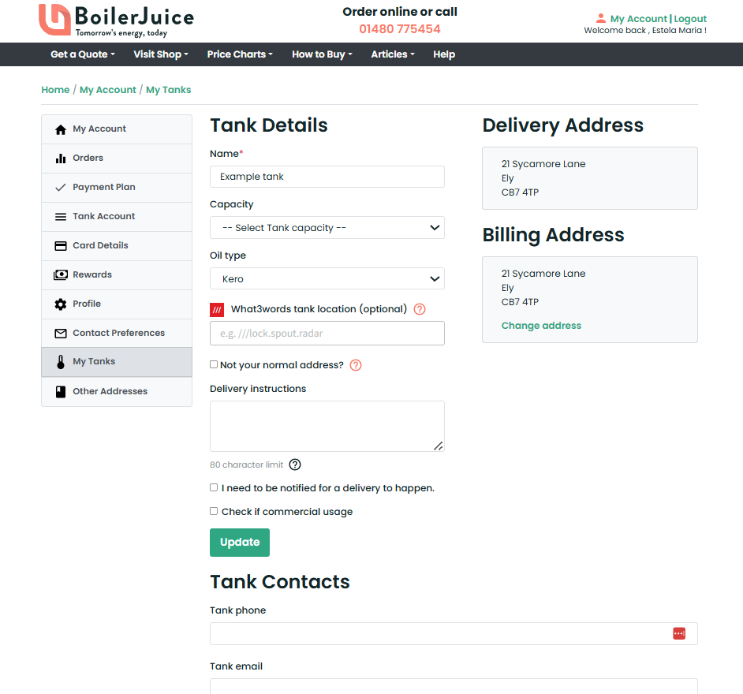

Overview
BoilerJuice is the UK's leading heating oil supplier, providing a simple, efficient, and
cost-effective way for customers to order heating oil.
Established in 2004, BoilerJuice
revolutionised the industry by offering a price comparison service that allows users to find
the best local deals
on heating oil.
BoilerJuice, founded in 2004, revolutionised the heating oil market by offering a comparison
website that helped users save money by finding local,
cheaper prices and facilitating oil
deliveries. However, as demand grew, the traditional customer journey (relying on phone
orders and a basic online form)
became outdated and inefficient.
With its focus on customer satisfaction, BoilerJuice
has built a reputation for offering competitive prices, reliable delivery, and a seamless
online experience. The company operates through an extensive network of trusted heating oil
suppliers, ensuring that customers receive fast
and reliable delivery, no matter where they
are.
Due to their growing popularity and the seasonal surge in orders during winter, BoilerJuice faced
challenges in maintaining customer satisfaction.
A key issue was the lack of a fast, real-time heating oil level monitoring system. Customers often
discovered their tank levels were already
critically low by the time they placed an order, leaving them without heating, particularly in remote
locations such as countryside cottages.
On top of that, the ordering process was cumbersome.
Customers had to manually search for the best quote, place their order, and then call customer service to
confirm and receive delivery updates.
This not only placed significant strain on the customer service team and increased operational costs, but
also risked losing clients to competitors,
as many did not want to wait in lengthy call queues.
Customers also
had to physically check oil levels, which was inconvenient, especially during cold weather.
The lack of real-time updates and limited online interaction led to frustration, service
abandonment, and loss of potential customers.
The challenge
Customers needed a fast, friction-free way to understand pricing and options and place a heating-oil order.
Many also had to go outside to read their tank gauges, unpleasant in winter and impractical for customers
with mobility constraints.
The existing website, calculator, and service showed the following issues:
Some of the pain points found:
Cluttered layout and weak content hierarchy, making key actions hard to find.
A long, single-column form that was difficult to access on mobile; critical
fields slipped below the fold or under the keyboard.
Inconsistent responsive behavior across devices; key tasks (get a quote, order,
reorder, track delivery) were unreliable on phones and desktops.
Accessibility gaps (contrast, focus states, labels, keyboard navigation,
screen-reader support) that made the journey harder for older adults and people with disabilities.
Forced account creation before value was demonstrated; no clear guest checkout
or clear “save my quote” path.
Authentication and account-management problems (login loops, password reset
failures, unclear error states).
Fragmented end-to-end flow—from quote to checkout to delivery—causing drop-offs,
abandoned orders, lower trust in the platform and unnecessary support calls.
Limited order status visibility; no proactive notifications, live ETAs, or
delivery-window selection.
Over-reliance on phone support; no real alternative channels such as email, SMS,
or WhatsApp for alerts and updates.
Progress not preserved when switching devices; forms sometimes hid fields on
small screens.

No real-time tank-level input or smart gauge integration, increasing the risk of
running out in cold weather.
Pricing opacity: unclear fees, taxes, minimum order quantities, and
postcode-based pricing changes.
No budget or payment options (e.g., monthly plans, subscriptions, instalments,
or AutoPay).
Weak reorder tools: no order history, favourites, or one-tap “repeat last
order.”
Poor address and service-area validation; users could progress only to learn
delivery wasn’t available.
Missing delivery preferences (safe-fill limit, access notes, gate codes, pets,
parking/driveway constraints).
Limited support for multiple tanks, tank-size selection, and safe-capacity
calculations.
Performance issues on slower rural connections; timeouts during peak demand or
severe weather.
Trust and compliance signals were missing or buried (safety credentials,
insurance, environmental commitments, GDPR/privacy).
Inconsistent terminology and units (litres vs. gallons), confusing price and
quantity expectations.
Content relied on jargon and lacked reassurance, especially for winter or
emergency scenarios.
These issues led to an increase of support calls, abandoned orders, and lower trust in the platform.

Source images: Arlington
Research on Unsplash,
Vitolda
Klein on Unsplash,
Kev
Costello on Unsplash,
Boilerjuice Ltd.
My role

Over ~18 months, I held ~80% UX ownership in a 300-person cross-functional team.
We used Confluence, Google Analytics, and optimised the web experience across Chrome, IE, Firefox, Opera,
and Safari.
The team included product owners, engineers, customer service specialists, heating oil partners, marketing
professionals, and developers,
altogether involving around 300 people. We collaborated using platforms such as Confluence and Google
Analytics, and designed for web
environments optimised for Chrome and Internet Explorer, while also ensuring compatibility with Firefox,
Opera, and Safari.
Designed and launched a new service that makes buying heating oil as effortless as being connected to a mains
supply.
This included creating new user journeys, redesigning legacy pages, and building fresh content for the
Connected Service
across the company’s public website (www.boilerjuice.com) and mobile app.
Some of my tasks:
UI Designer (User Interface Design).
Conducted user research in collaboration with the Product Owner.
Collaborated with Product Owner, Engineers, Customer Service, Heating Oil Companies, Data
Analysts, and Developers.
Delivered user research insights, ecosystem maps, blueprint canvases, lean canvases, user
flows with UX diaries,
and information architecture maps in collaboration with Engineers and the Product
Owner.
Produced wireframes and interactive prototypes with Axure and Figma.
Created and maintained a design system with detailed interaction specifications using
InVision.
Worked with the marketing team to create digital marketing materials.
Process & Approach
1 – Business research and discovery
- Organised a series of meetings and workshops with stakeholders, customer service teams, product managers,
and developers to understand both what was working well and what was not, as well as to gain clarity on
the
new offering - the Connected Service.
- During this process, I used sketches and the Lean Canvas framework to quickly capture current problems,
business goals, value propositions, and success metrics, with the aim of achieving a market-fit product.
- Identified key user groups (including adults over 40 and stay-at-home parents) to map personas and capture
diverse needs.
- Identified the key problems, opportunities, and challenges, focusing in particular on the main blockers
and customer pain points within the journey, as well as patterns in returning-user behaviour.
- Assessed how the new Connected Service might compare with the competition, and whether it could deliver
advantages by meeting the underserved needs of users in the current market.
Personas created with Smaply.

Tasks and deliverables produced during this phase:
- Held initial meetings with BoilerJuice stakeholders to gather their perspectives on potential problems and
created a Lean Canvas to document and organise insights.
- Analysed customer feedback and support tickets to identify common pain points and recurring issues.
- Ran recurring in-depth interviews with at least 10 customers per week over several months, ensuring
consistent feedback, ensuring representation from diverse UK regions including East Midlands, West Midlands,
Yorkshire and Humber, North West, North East, Wales, Scotland, and Northern Ireland.
- Reviewed and extracted Google Analytics data to pinpoint drop-off points in the user experience, mapping
them into detailed user flows and breaking the journey down into key micro-interactions.
- Created empathy maps to visualise user needs (pain points and opportunities), emotions, and behaviours at
different stages of the journey.
- Benchmarked competitor experiences to identify best practices and gaps in the market.
- Mapped ecosystem diagrams to show how the product interacts with other systems and stakeholders.
- Conducted a comprehensive as-is audit of the current website, mobile experience, and app, supplemented by a
detailed competitive analysis.
- Facilitated a stakeholder workshop to align on goals, define success criteria, and prioritise key problem
areas for design and research focus.


2 - Wireframing & Prototyping
- Mapped user flows in Draw.io and Sketch, capturing both ‘happy’ and ‘unhappy’ paths to anticipate
and
address potential issues early in the design process.
- Created low- to mid-fidelity interactive wireframes in Axure, Sketch, Figma, and Balsamiq
for
stakeholder review, ensuring a shared understanding of functionality and flow.
- Applied consistent iconography and clear, accessible headings to support usability.
- Redesigned the quote form to provide faster, clearer heating-oil quotes, while also enabling the
promotion and sale of a heating-oil subscription service.
- Focused on improving the end-to-end purchasing experience for heating oil. I redesigned key pages
in the
checkout journey, including product selection, shopping cart,
payment, and the final confirmation page,
to ensure a smoother, more transparent, and mobile-friendly
process.
The goal was to reduce friction, increase
trust at each step, and provide clear reassurance after
purchase.
- Refined marketing propositions, placing them more strategically on the page and removing visual clutter to
improve clarity and focus.
- Implemented consistent iconography and clear headings.
- Added an improved search function for faster access to key documents and data.

BoilerJuice homepage wireframe designed using Axure
RP.
Source images: Boilerjuice Ltd.
3 - Testing & Iteration with live performance and feedback

4 - Sign-off and handover
Outcome
BoilerJuice was a growing oil marketplace, but customers often found the ordering process clunky, price
comparisons confusing, and overall trust low.
In winter, heating oil deliveries could take one to two weeks, and many families were left without heating
because the time-consuming process of requesting quotes, making payments, and arranging deliveries created
delays.
- Increase in self-serve ordering; CS calls shifted toward proactive follow-ups rather than winter
emergencies.
- Faster quote-to-order and clearer delivery expectations, improving perceived reliability.
- Higher repeat usage via alerts and subscription options, strengthening loyalty.
- Operational resilience during peak demand due to earlier reordering and better transparency.
But after UX improvements:
Simplified the order flow → reduced drop-off.
Clearer price transparency → increased trust + conversions.
Seamless uninterrupted journey → allowed customers to have real-time information
about heating oil levels within the comfort of their homes.
Mobile-first redesign → opened up a larger customer segment.
Personalised journeys (repeat orders, reminders) → boosted retention.
Redesigned the website to be more accessible and user-friendly → streamlining the
customer journey from quote to order.
Created new quote-generation screens → made pricing clearer and ordering faster,
while highlighting potential issues up front, which not only reduced customer stress but also improved the
quality of interactions with the support team.
Collaborated in the creation of a new service, the Connected Service, a
subscription-style model that makes buying heating oil feel as effortless as being on mains. → This
subscription-style model transformed the experience of buying heating oil into a seamless process.
Redesigned client dashboards to integrate data from a new tank device → providing
customers with automatic usage readings, alerts, and clear guidelines.
Omnichannel redesign → consistent, uninterrupted experience across devices and
platforms.
Peak-season resilience → support pressure reduced; calls shifted from winter
emergencies to proactive follow-ups.
Retention engine → alerts and subscription options encouraged timely reorders and
sustained engagement.
UX contributions → central in turning BoilerJuice into the UK’s largest online
heating oil marketplace.
BoilerJuice key results
↓ 20–30%Checkout drop-off
↑ 10–15%Repeat orders
↓ 25–35%Winter support tickets
*Indicative ranges shown where exact figures are confidential.
BoilerJuice - Key results visualised
Checkout drop-off
↓ 20–30% • Midpoint 25%
Lower is better25%
Repeat orders
↑ 10–15% • Midpoint 12.5%
Higher is better12.5%
Winter support tickets
↓ 25–35% • Midpoint 30%
Lower is better30%
Ranges are indicative; exact figures remain confidential.
My contribution
- Accessible, mobile-first redesign: Reworked information architecture, forms, error states,
and contrast to make the experience clearer and more inclusive across web, mobile, and app.
- Quote & checkout clarity: Designed new quote-generation screens and simplified
steps/copy to reduce friction and decision fatigue.
- Connected Service (subscription-style): Co-created and redesigned the proposition and
end-to-end flows so buying oil felt as effortless as a mains connection.
- IoT-enabled dashboards: Redesigned account areas to ingest smart-tank readings; introduced
low-level alerts, usage trends, refill guidance, and exception handling.
- Proactive issue surfacing: Embedded warnings and guidance earlier in the journey, improving
first-time resolution and the quality of CS interactions.
- Omnichannel orchestration: Established shared patterns and components for a consistent,
uninterrupted experience across channels and devices.
- Evidence-driven iteration: Led discovery and validation (interviews, journey mapping,
analytics, A/B tests), prioritising a roadmap that balanced user value with operational feasibility.
- Delivery partnership: Worked closely with engineers on specs, edge cases, and QA/UAT to
de-risk implementation and speed up release cycles.
The outcome - new screens
User journey from quote to order confirmation page.
Screen 1
Screen 2
Screen 3
Screen 4
Screen 5
Screen 6

Screen 7
Screen 8

Screen 9

Screen 10

Screen 11

Screen 12
Screen 13
Account dashboard screens and help pages.
Screen 14
Screen 15
Screen 16
Screen 17
Screen 18
Screen 19
Screen 20
Screen 21
Screen 22

Screen 23
Screen 24
Screen 25
Screen 26
Reflection
Connecting live tank data to the digital journey transformed heating oil buying from a reactive, last-minute
scramble into a proactive,
planned experience. Real-time levels, clearer quotes, and tracked deliveries increased trust and pushed more
customers toward self-serve
behaviours. The omnichannel, accessible redesign reduced seasonal pressure on support, shifted conversations
from emergencies to follow-ups,
and created a foundation for retention through alerts and subscription-style ordering. In short: less panic,
more planning—and a service that finally felt as reliable as a utility.
- Real-time data & alerts made usage visible and actionable, reducing winter stress and stockouts.
- Price transparency and a streamlined quote-to-order flow improved confidence and conversion.
- Omnichannel consistency + accessibility widened reach and simplified repeat ordering.
- Cross-functional delivery (engineering, CS, suppliers) turned UX changes into service innovation.